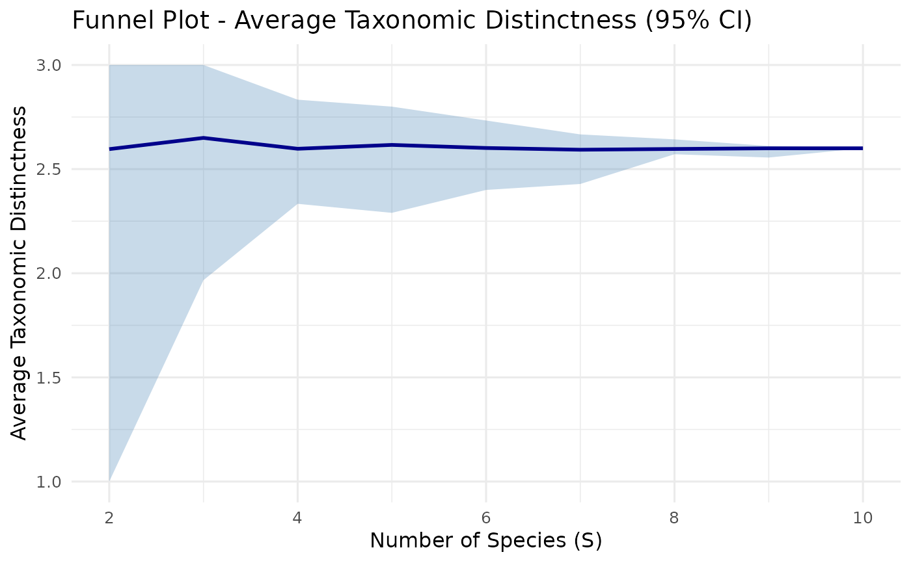
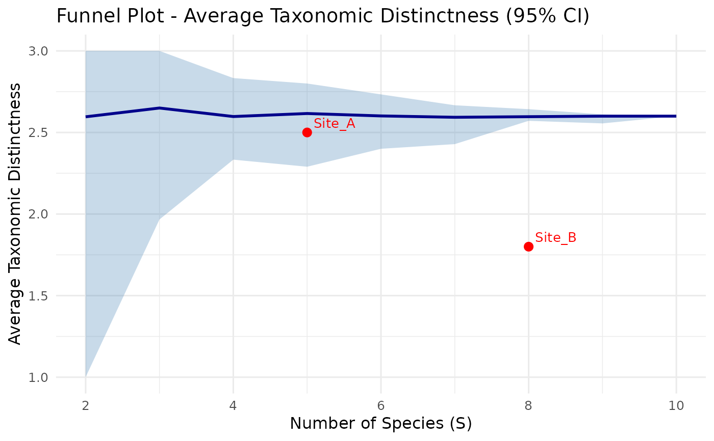

Produces a Clarke & Warwick style funnel plot showing expected confidence limits for Average Taxonomic Distinctness (AvTD) and/or Variation in Taxonomic Distinctness (VarTD) as a function of species richness. Observed site values can be overlaid to assess whether they fall within or outside the expected range.
Usage
plot_funnel(
sim_result,
observed = NULL,
index = c("avtd", "vartd"),
title = NULL,
point_labels = TRUE,
mean_color = "darkblue",
ci_color = "steelblue"
)Arguments
- sim_result
A
td_simulationobject returned bysimulate_td().- observed
Optional data frame with columns
site(character),s(integer, species richness), andvalue(numeric, observed AvTD or VarTD). Points are plotted on the funnel.- index
Which index to plot when
sim_resultcontains both:"avtd"(default) or"vartd".- title
Optional plot title. If
NULL, generated automatically.- point_labels
Logical; if
TRUE(default), label observed points with site names.- mean_color
Color of the mean line (default:
"darkblue").- ci_color
Fill color of the confidence band (default:
"steelblue").
Details
The funnel shape arises because small samples (low S) have greater random variation in AvTD/VarTD, producing wider confidence bands. As S approaches the full species pool, the band narrows.
Observed points falling below the lower confidence limit suggest the community has lower taxonomic breadth than expected by chance, potentially indicating environmental stress or biotic homogenisation.
Requires the ggplot2 package.
References
Clarke, K.R. & Warwick, R.M. (1998). A taxonomic distinctness index and its statistical properties. Journal of Applied Ecology, 35, 523-531.
See also
simulate_td() for generating the simulation,
avtd() and vartd() for the underlying calculations.
Examples
# \donttest{
tax <- data.frame(
Species = paste0("sp", 1:10),
Genus = rep(c("G1", "G2", "G3", "G4", "G5"), each = 2),
Family = rep(c("F1", "F1", "F2", "F2", "F3"), each = 2),
Order = rep(c("O1", "O1", "O2", "O2", "O2"), each = 2),
stringsAsFactors = FALSE
)
sim <- simulate_td(tax, n_sim = 99, seed = 42)
# Basic funnel plot
plot_funnel(sim)

# With observed sites
obs <- data.frame(
site = c("Site_A", "Site_B"),
s = c(5, 8),
value = c(2.5, 1.8)
)
plot_funnel(sim, observed = obs)

# }